2 Les états de la matière
- Distinguer les trois états de la matière.
- Décrire les propriétés macroscopiques et submicroscopiques de chaque état.
- Identifier et décrire chaque changement d’état.
- Connaître les facteurs qui influencent les points d’ébullition et de fusion.
- Interpréter une courbe de changements d’états.
2.1 Les représentations en chimie
Nous allons considérer la matière de trois points de vue différents :
- point de vue macroscopique Le domaine de la matière que l’on peut voir, sentir ou toucher.
- point de vue submicroscopique Le domaine de la matière que l’on ne peut pas voir (atomes, molecules, etc.).
- point de vue symbolique Le domaine qu’on utilise pour représenter “mathématiquement” la matière (équations, symboles, formules, etc.).
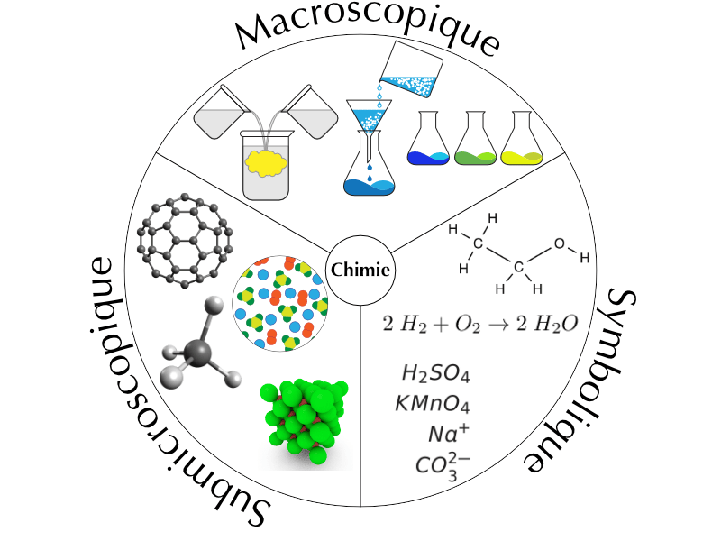
Les propriétés macroscopiques sont régies par ce qu’il se passe au niveau submicroscopique.
2.2 Solide, liquide et gaz
La matière se trouve généralement sous trois formes physiques appelées états: solide, liquide et gaz.
| point de vue macroscopique | point de vue submicroscopique | |
|---|---|---|
| solide | Les solides ont un volume défini et une forme définie. | Les particules sont peu mobiles et très proches. |
| liquide | Les liquides ont un volume défini mais ils adoptent la forme de leur contenant. | Les particules sont proches et se déplacent lentement aléatoirement. |
| gaz | Les gaz occupent tout le volume et la forme de leur contenant. | Les particules sont séparées par de grandes distances et se déplacent très rapidement aléatoirement. |
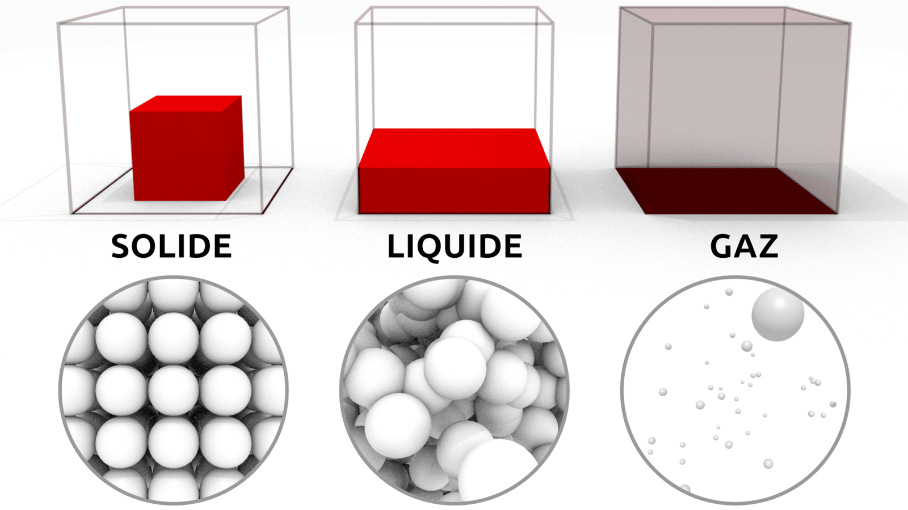
2.3 Mouvement thermique et forces intermoléculaires
La théorie cinétique de la matière nous indique que les particules qui composent la matière sont constamment en mouvement. Ce mouvement chaotique de particules est appelé mouvement thermique.
L’énergie thermique est l’énergie résultante du mouvement de ces particules. Elle est directement proportionnelle à la température de la substance. Cela signifie que plus la température augmente, plus les particules se déplacent rapidement et plus l’énergie qu’elles possèdent est élevée.
Il existe des forces d’attraction qui rassemblent les particules qui constituent la matière. Ces forces sont appelées les forces intermoléculaires. Ces forces sont d’origine électrostatique, elles sont dues à l’attraction entre des espèces chargées électriquement (positives et négatives).
- L’énergie thermique a tendance à séparer les particules qui forment la matière.
- Les forces intermoléculaires ont tendance à maintenir ensemble les particules qui forment la matière.
Les trois états de la matière sont le résultat de l’équilibre entre les forces intermoléculaires et l’énergie thermique.
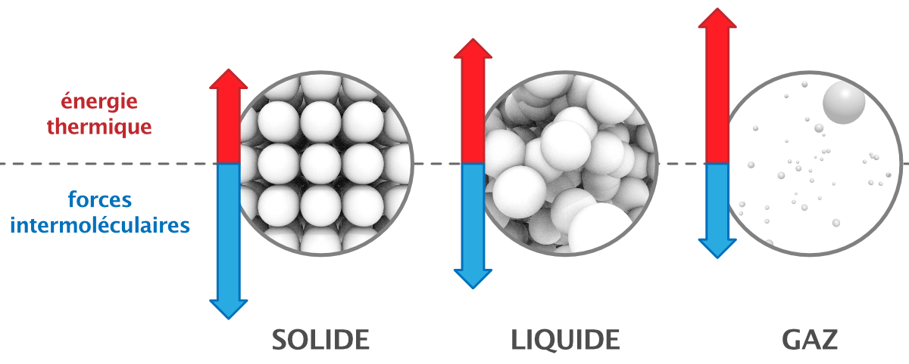
Lorsque les forces intermoléculaires sont fortes et l’énergie thermique faible, la substance aura tendance à se trouver à l’état solide. Lorsque les forces intermoléculaires sont faibles et l’énergie thermique forte, la substance aura tendance à se trouver à l’état gazeux. L’état liquide résulte d’une équivalence entre forces intermoléculaires et énergie thermique.
Complétez la phrase : les trois états de la matière résultent de l’équilibre entre les ______________________ et l’______________________.
Pour chacune des situations suivantes, indiquez l’état physique (solide, liquide ou gaz) le plus probable :
- forces intermoléculaires fortes et énergie thermique faible ;
- forces intermoléculaires faibles et énergie thermique élevée ;
- forces intermoléculaires et énergie thermique comparables.
Vrai ou faux ? Corrigez les affirmations fausses.
- L’énergie thermique tend à rapprocher les particules de la matière.
- L’énergie thermique d’une substance est proportionnelle à sa température.
- Dans un gaz, les particules sont très éloignées et se déplacent très rapidement.
… entre les forces intermoléculaires et l’énergie thermique.
- solide (les forces l’emportent, les particules restent liées et ordonnées) ;
- gaz (l’énergie thermique l’emporte, les particules se séparent) ;
- liquide (équilibre entre les deux effets).
- Faux : l’énergie thermique tend à séparer les particules ; ce sont les forces intermoléculaires qui les rapprochent.
- Vrai.
- Vrai.
2.4 Les changements d’état
En général, chaque état de la matière, solide, liquide ou gaz, peut se transformer en l’un des deux autres états. Ces transformations sont appelées changements d’état. Par exemple, l’eau peut subir deux changement d’état : elle fond à 0°C et bout à 100°C. Toutes les substances sont susceptibles de subir un changement d’état. Le fer fond à 1535°C et bout 2750°C.
On peut modifier l’état d’une substance en lui fournissant ou lui retirant de l’énergie thermique:
Lorsque la température augmente
- L’énergie thermique augmente.
- Les particules se déplacent plus rapidement et se libèrent des forces d’attraction.
Lorsque la température diminue
- L’énergie thermique diminue.
- Les particules se déplacent moins rapidement et les forces d’attraction les rassemblent.
Les changements d’état sont des transformations physiques. Lors d’un changement d’état une substance change la façon dont ses atomes ou molécules sont organisées sans changer les particules elles-mêmes.
- Le point de fusion est la température à laquelle une substance passe de l’état solide à l’état liquide.
- Le point d’ébullition est la température à laquelle une substance passe de l’état liquide à l’état gazeux.
L’évaporation est la transformation d’un liquide en vapeur sans ébullition. Il peut y avoir vaporisation sans ébullition de la matière.
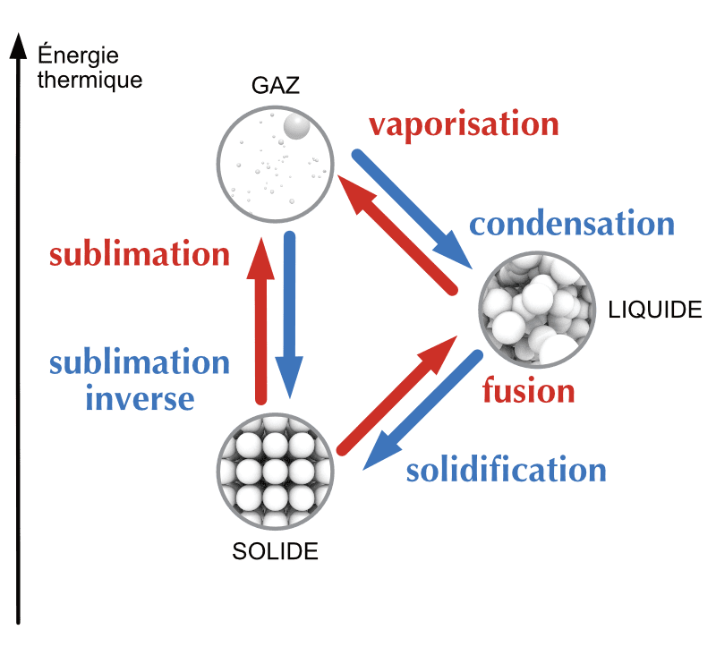
- Lequel(s) des énoncés suivants décrit ce qui se passe lorsque des particules d’eau gèlent ?
- Elles gagnent de l’énergie et de l’espace pour se déplacer.
- Elles gagnent de l’énergie et se décomposent en atomes d’hydrogène et d’oxygène.
- Elles perdent de l’énergie et s’échappent dans l’atmosphère.
- Elles perdent de l’énergie et de l’espace pour se déplacer.
- Lequel(s) des énoncés suivants décrit le mieux le comportement des particules dans un gaz ?
- Éloignées et se déplaçant lentement.
- Rapprochées et immobiles.
- Rapprochées et en vibration.
- Très éloignés et se déplaçant très rapidement.
- Lequel(s) des énoncés suivants est vrai pour gaz qui condense ?
- Le gaz libère de l’énergie thermique.
- La température du gaz augmente.
- Les particules de gaz perdent de leur liberté de mouvement.
- Les particules de gaz diminuent en taille.
- Lequel(s) des énoncés suivants est vrai pour un liquide passant à l’état gazeux ?
- La température du liquide reste constante.
- Les particules de liquide gagnent en liberté de mouvement.
- Les particules de liquide augmentent en taille.
- Le liquide libère de l’énergie thermique.
- Lequel(s) des énoncés suivants est vrai pour un liquide passant à l’état solide ?
- Le liquide libère de l’énergie thermique.
- Les particules de liquide diminuent en taille.
- La température reste constante.
- Les particules de liquide augmentent leur liberté de mouvement.
- Lequel(s) des énoncés suivants décrit ce qui se passe lorsque des particules d’eau gèlent?
- Elles perdent de l’énergie et de l’espace pour se déplacer.
- Lequel(s) des énoncés suivants décrit le mieux le comportement des particules dans un gaz?
- Très éloignés et se déplaçant très rapidement.
- Lequel(s) des énoncés suivants est vrai pour gaz qui condense?
- Le gaz libère de l’énergie thermique.
- Les particules de gaz perdent de leur liberté de mouvement.
- Lequel(s) des énoncés suivants est vrai pour un liquide passant à l’état gazeux?
- La température du liquide reste constante.
- Les particules de liquide gagnent en liberté de mouvement.
- Lequel(s) des énoncés suivants est vrai pour un liquide passant à l’état solide?
- Le liquide libère de l’énergie thermique.
- La température reste constante.
Un coton imbibé d’éther mis en contact sur la peau provoque une sensation de froid. On sait, par ailleurs, que l’éther passe facilement de l’état liquide à l’état gazeux.
Quel nom donne-t-on à ce changement d’état ?
Quelle conclusion (scientifique) peut-on mettre en relation avec la sensation de froid mentionné ?
- Quel nom donne-t-on à ce changement d’état ? La vaporisation
- Quelle conclusion (scientifique) peut-on mettre en relation avec la sensation de froid mentionné ? L’éther absorbe la chaleur du corps pour vaporiser, d’où la sensation de froid.
2.5 Les courbes de changement d’état
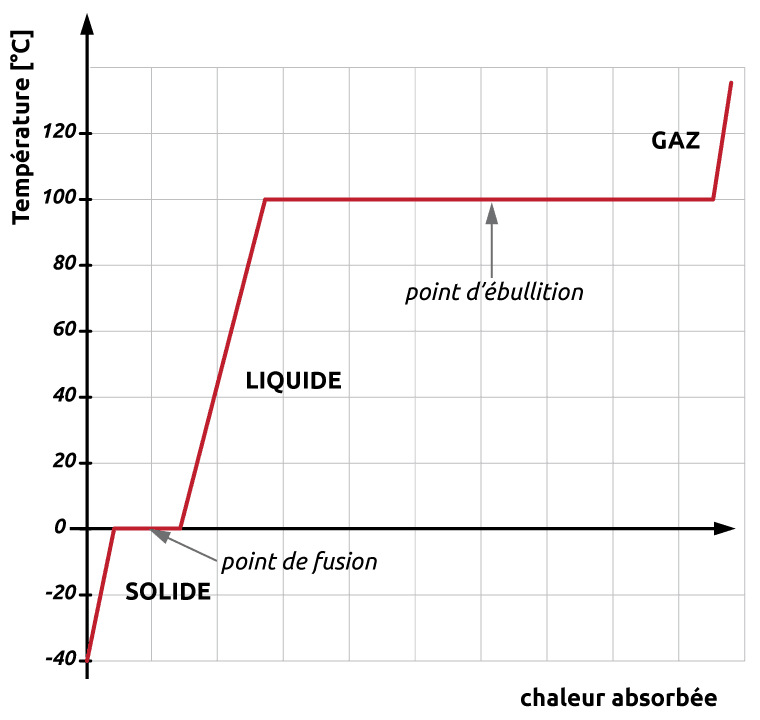
Imaginons que l’on chauffe un bloc de glace en partant d’une température de -40°C. On place un thermomètre dans notre expérimentation et on note la température.
- En chauffant, on apporte de l’énergie thermique au système. La glace se réchauffe et sa température augmente.
- Une fois que la glace atteint 0°C, la température cesse d’augmenter et la glace commence à fondre pour former de l’eau liquide.
- En continuant de chauffer, plus de glace se transforme en eau, mais la température reste la même.
- Une fois que la glace a complètement fondu, la chaleur apportée chauffe l’eau liquide. La température recommence à augmenter.
- Une fois que l’eau liquide atteint 100°C, la température cesse d’augmenter et l’eau commence à vaporiser pour former de la vapeur d’eau.
- En continuant de chauffer, plus d’eau liquide se transforme en vapeur d’eau, mais la température reste la même.
- Une fois que l’eau s’est complètement vaporisée, la chaleur apportée chauffe la vapeur d’eau. La température recommence à augmenter.
Un changement de température et un changement d’état ne se produisent pas en même temps. Quand une substance absorbe ou libère de l’énergie, soit c’est la température qui change, soit c’est son état. En d’autres termes, la température d’une substance ne change pas au cours d’un changement d’état.
En effectuant la même expérience, mais en partant de vapeur d’eau chaude et en diminuant la température, la courbe serait inversée et aurait la même allure.
On chauffe régulièrement un échantillon d’une substance pure, initialement solide, et on relève sa température au cours du temps :
- Temps (en min) : 0, 1, 2, 3, 4, 5, 6, 7, 8, 9, 10
- Température (en °C) : -20, 10, 40, 40, 40, 70, 100, 100, 100, 100, 120
- Quelle est la température de fusion de cette substance ? Sa température d’ébullition ?
- Entre quels instants la substance est-elle entièrement à l’état liquide ?
- Que représentent les paliers ? Pourquoi la température reste-t-elle constante pendant un changement d’état ?
- Quel est l’état physique de cette substance à 25 °C (sous pression atmosphérique) ?
- Le premier palier a lieu à 40 °C : c’est la température de fusion. Le second palier a lieu à 100 °C : c’est la température d’ébullition.
- La fusion se termine à \(t = 4\) min et l’ébullition débute à \(t = 6\) min. La substance est entièrement liquide entre 4 et 6 minutes (température qui remonte de 40 °C à 100 °C).
- Les paliers correspondent aux changements d’état (fusion puis vaporisation). Pendant un changement d’état, l’énergie thermique apportée sert à réorganiser les particules (vaincre les forces intermoléculaires) et non à augmenter leur agitation : la température reste donc constante.
- À 25 °C, la température est inférieure au point de fusion (40 °C) : la substance est solide.
2.6 Les diagrammes de phases
Nous avons vu qu’il est possible de liquéfier un gaz à pression ambiante en le refroidissant. Pourtant, cela ne suffit pas toujours. Par exemple, on sait qu’à pression atmosphérique, le dioxyde de carbone CO2 passe directement de la phase gazeuse à la phase solide (sublimation inverse). Ainsi, pour obtenir du CO2 liquide, il est nécessaire d’augmenter la pression.
Ce genre d’informations est résumé sur un diagramme de phases qui donne les conditions (pression et température) d’existence des différentes phases d’une substance donnée.
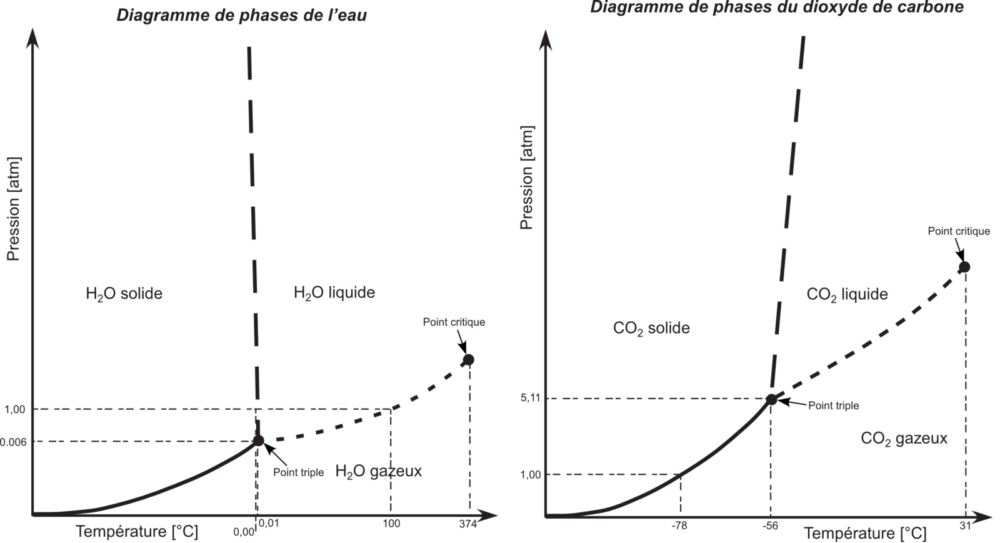
- Quelle est la pression minimale pour que le CO2 liquide puisse exister ?
- Quelle doit alors être la température ?
- Que représente le point triple ?
- Que se passe-t-il si on prend de l’eau à 0.005 atm et –200° C et qu’on augmente la température jusqu’à 300° C ?
- Même question pour le CO2.
- 5.11 atm
- -56° C
- Les conditions dans lesquelles trois phases différentes peuvent coexister.
- L’eau ne sera jamais liquide.
- Le CO2 ne sera jamais liquide.
2.7 L’état liquide
Au niveau submicroscopique, les particules qui forment les liquides suivent des mouvements aléatoires constants. Elles peuvent être ordonnées sur de courtes portions, mais cela ne dure pas très longtemps.
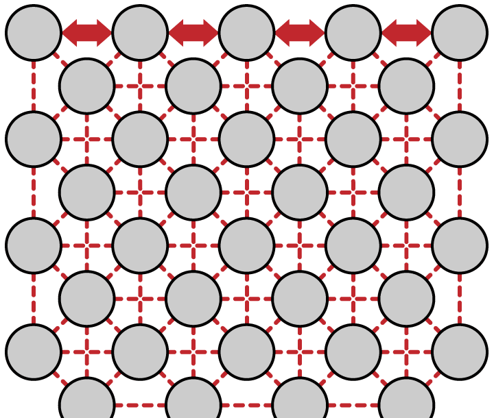
Les forces intermoléculaires ont des effets différents sur une particule à la surface que sur une particule dans le corps du liquide.
- Une particule à l’intérieur du liquide est attirée par d’autres particules dans toutes les directions.
- Une particule en surface n’est attirée dans le corps du liquide que par les côtés et en dessous, mais pas au-dessus.
Cette attraction inégale fait que le liquide a un volume propre et ne se disperse pas. Ce phénomène est appelé tension superficielle.
La viscosité est la résistance à l’écoulement d’un liquide. Elle dépend des forces intermoléculaires et de la température. Les liquides ayant des forces intermoléculaires fortes ont tendance à avoir une viscosité élevée.
La capillarité est la tendance qu’a un liquide à monter le long d’un tube étroit. Elle est causée par la compétition entre les forces intermoléculaires dans le liquide et les forces d’attraction entre le liquide et la paroi du tube.
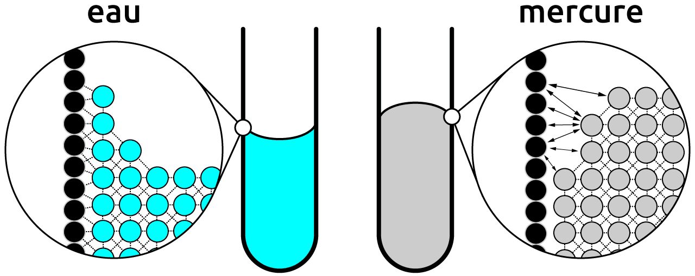
Associez chaque terme à sa définition : tension superficielle, viscosité, capillarité.
- Résistance d’un liquide à l’écoulement.
- Tendance d’un liquide à monter le long d’un tube étroit.
- Comportement de la surface d’un liquide, qui se resserre comme une membrane, dû à l’attraction inégale subie par les particules de surface.
Le miel est beaucoup plus visqueux que l’eau. Que peut-on en déduire sur l’intensité de ses forces intermoléculaires ?
Un insecte (le gerris) se déplace à la surface d’un étang sans s’enfoncer. Quel phénomène l’explique ?
Que devient la viscosité d’une huile lorsqu’on la chauffe ? Expliquez à l’aide de l’énergie thermique.
- viscosité ;
- capillarité ;
- tension superficielle.
Une forte viscosité indique des forces intermoléculaires fortes : les particules sont fortement attirées entre elles et s’écoulent difficilement.
La tension superficielle : la surface de l’eau se comporte comme une membrane élastique capable de supporter le poids de l’insecte.
En chauffant, l’énergie thermique augmente : les particules se déplacent plus vite et se libèrent en partie des forces intermoléculaires. La viscosité diminue (l’huile chaude coule plus facilement).
2.8 L’état solide
Au niveau submicroscopique, les solides peuvent être de deux types - amorphe ou cristallin.
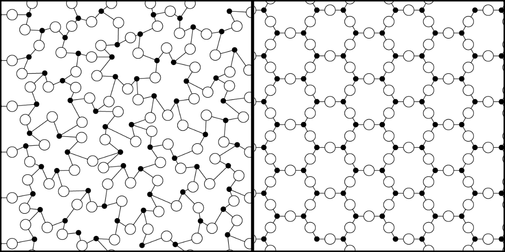
2.8.1 Les solides amorphes
Les particules formant les solides amorphes ne sont pas ordonnées sur de grandes portions de l’espace. Leur structure est irrégulière et ressemble plus à la structure d’un liquide qui serait figé.
Les solides amorphes n’ont pas un point de fusion distinct. Ils deviennent simplement plus souple lorsque la température augmente. Le verre, le caoutchouc ou le beurre sont des exemples de solides amorphes.
2.8.2 Les solides cristallins
Les particules formant les solides cristallins sont assemblées les unes par rapport aux autres de façon régulière sur de vastes portions de l’espace. Cette structure tridimensionnelle est appelée réseau cristallin.
Une maille est un volume de cristal, qui, lorsqu’il est répété dans les trois dimensions de l’espace, permet d’obtenir le cristal tout entier.
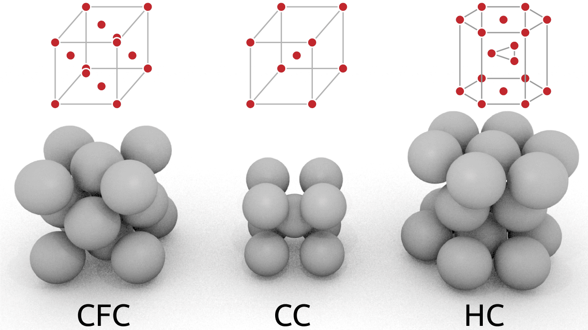
2.8.3 Allotropes
L’allotropie est la propriété qu’ont certains corps à former des cristaux de différentes formes, appelés allotropes de cette substance. Par exemple, le diamant, le graphite et les fullerènes sont des formes allotropiques du carbone: formés du même élément mais dont la structure cristalline est différente.
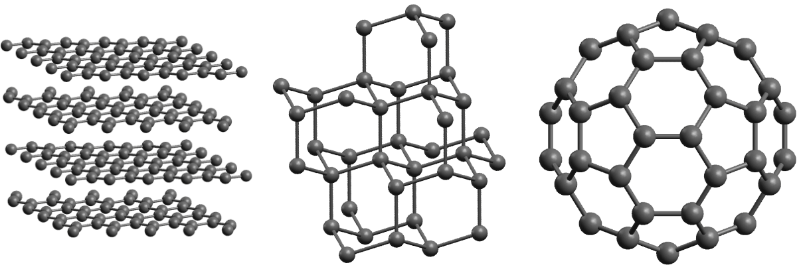
Donnez deux différences entre un solide amorphe et un solide cristallin.
Pourquoi un solide amorphe, comme le verre, n’a-t-il pas de point de fusion net ?
Qu’appelle-t-on une maille dans un solide cristallin ?
Le diamant et le graphite sont tous deux uniquement constitués de carbone, mais leurs propriétés sont très différentes. Quel terme décrit cette situation ? À quoi est due cette différence de propriétés ?
Deux différences (au choix) :
- un solide cristallin possède une structure ordonnée et régulière (réseau cristallin) sur de grandes distances, alors qu’un solide amorphe a une structure irrégulière (semblable à un liquide figé) ;
- un solide cristallin a un point de fusion net, un solide amorphe ramollit progressivement sans point de fusion précis.
Ses particules ne sont pas ordonnées de façon régulière : les forces intermoléculaires à vaincre ne sont pas toutes identiques. Le solide se ramollit progressivement au lieu de fondre à une température unique.
La maille est le plus petit volume du cristal qui, répété dans les trois directions de l’espace, reconstitue l’ensemble du réseau cristallin.
C’est l’allotropie : le diamant et le graphite sont des formes allotropiques du carbone. La différence provient de leur structure cristalline (arrangement des atomes de carbone), différente d’un allotrope à l’autre.
2.9 Résumé
- La matière existe sous trois états : solide, liquide et gaz.
- Les propriétés macroscopiques d’un état s’expliquent au niveau submicroscopique par la disposition et le mouvement des particules.
- Les trois états résultent de l’équilibre entre les forces intermoléculaires et l’énergie thermique qui les sépare. L’énergie thermique est proportionnelle à la température.
- Il existe six changements d’état : fusion, solidification, vaporisation, condensation, sublimation et sublimation inverse. Ce sont des transformations physiques qui absorbent ou libèrent de la chaleur.
- Pendant un changement d’état, la température reste constante : elle se traduit par un palier sur la courbe de changement d’état.
- Le point de fusion et le point d’ébullition dépendent de la pression et sont abaissés par la présence d’impuretés.
- Le diagramme de phases donne l’état d’une substance selon la température et la pression ; le point triple est l’unique condition où les trois états coexistent. Au-delà du point critique la distinction liquide/gaz disparaît.
- À l’état liquide, les forces intermoléculaires expliquent la tension superficielle, la viscosité et la capillarité.
- Les solides sont amorphes ou cristallins ; une même substance peut exister sous plusieurs formes cristallines, ses allotropes.
2.10 Exercices supplémentaires
- Pourquoi en montagne le point d’ébullition de l’eau diminue-t-il par rapport à celui observé au niveau de la mer ?
- Expliquez ce que sont les bulles qui apparaissent lorsque l’eau bout.
- Qu’est-ce que la condensation ? Citez un exemple de la vie pratique où vous pouvez observer de la condensation.
- Pourquoi met-on du sel sur les routes en hiver ?
- En montagne la pression atmosphérique est plus basse ce qui abaisse le point d’ébullition de l’eau.
- Les bulles, visibles à l’intérieur du liquide, sont des bulles de vapeur d’eau.
- Passage de l’eau de l’état gazeux à l’état liquide. Rosée du matin, buée sur les vitres, gouttelettes d’eau sur une boisson sortie du réfrigérateur, …
- Les impuretés abaissent le point de fusion d’une substance. Le sel abaisse le point de fusion de l’eau, ainsi elle gèlera à une température inférieure à 0° C.
Complétez le tableau suivant en décrivant le changement d’état. Le tableau a été partiellement complété pour vous aider.
| Changement d’état | libère ou absorbe de la chaleur | |
|---|---|---|
| condensation | libère | |
| sublimation | ||
| vaporisation | liquide \(\rightarrow\) gaz | |
| fusion | absorbe | |
| solidification | ||
| sublimation inverse |
condensation / gaz \(\rightarrow\) liquide / libère
sublimation / solide \(\rightarrow\) gaz / absorbe
vaporisation / liquide \(\rightarrow\) gaz / absorbe
fusion / solide \(\rightarrow\) liquide / absorbe
solidification / liquide \(\rightarrow\) solide / libère
sublimation inverse / gaz \(\rightarrow\) solide / libère
Connaissant les points de fusion et d’ébullition des substances suivantes, donnez l’état physique de la substance à température ambiante (25° C).
| substance | point de fusion | point d’ébullition | état physique à 25° C |
|---|---|---|---|
| eau | 0° C | 100° C | |
| méthane | -182° C | -162° C | |
| fer | 1535° C | 2750° C | |
| mercure | -39° C | 357° C | |
| oxygène | -218° C | -183° C | |
| or | 1063° C | 2856° C |
eau : liquide
méthane : gaz
fer : solide
mercure : liquide
oxygène : gaz
or : solide
On refroidit un liquide, tout en mesurant régulièrement sa température. Voici les résultats obtenu :
- Temps (en min) : 0, 1, 2, 3, 4, 5, 6, 7, 8, 9
- Température (en °C) : 20, 15, 10, 5, 5, 5, 5, 5, 0, -5
- Tracez le graphique représentant l’évolution de la température du liquide en fonction du temps lors de son refroidissement.
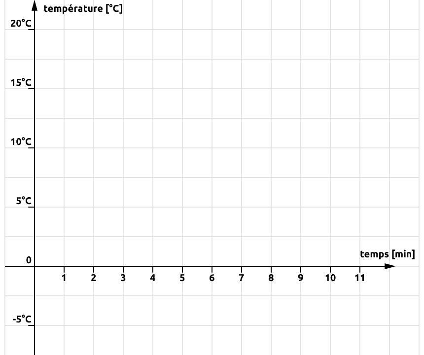
- Quel changement d’état à lieu ici ?
- Délimitez, sur le graphique, le début et la fin du changement d’état et indiquez les états physiques observés.
- Ce liquide est-il de l’eau? (Justifiez)
- En vous aidant des informations ci-dessous, déterminez quelle est la substance refroidie.
Température de solidification
- Acide lactique : 17° C
- Anéthole : 20° C
- Cyclohexane : 5° C
- Quelle est la température de fusion du cyclohexane ? Justifiez.
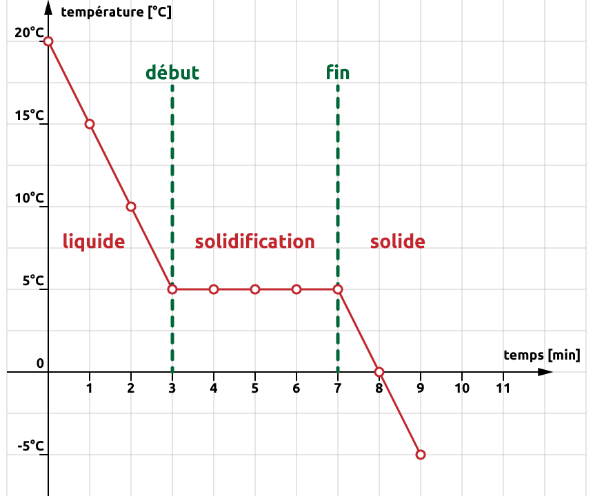
- La solidification
- Non, car l’eau solidifie à 0° C.
- Le cyclohexane, température de solidification = 5° C.
- 5° C, température de fusion = température de solidification.
Le diagramme de phases d’une substance pure X est caractérisé par les points suivants :
- point triple : \(T = -20\) °C et \(P = 0.40\) atm ;
- point critique : \(T = 130\) °C et \(P = 55\) atm ;
- sous \(P = 1\) atm : fusion à \(5\) °C et ébullition à \(85\) °C.
- Dans quel état se trouve X à \(25\) °C sous \(1\) atm ? Justifiez.
- Sous une pression de \(0.20\) atm, peut-on obtenir X à l’état liquide ? Expliquez à l’aide du point triple.
- On part de X solide à \(-50\) °C sous \(1\) atm et on chauffe jusqu’à \(150\) °C, à pression constante. Décrivez la succession des états et nommez chaque changement d’état rencontré.
- Que se passe-t-il si on chauffe X au-delà de \(130\) °C sous forte pression ? Comment nomme-t-on ce point particulier ?
Sous \(1\) atm, la fusion a lieu à \(5\) °C et l’ébullition à \(85\) °C. À \(25\) °C, on est entre les deux : X est liquide.
Le point triple se situe à \(0.40\) atm. En dessous de cette pression, la phase liquide n’existe pas : X passe directement du solide au gaz (sublimation). À \(0.20\) atm (\(< 0.40\) atm), il est donc impossible d’obtenir X liquide, quelle que soit la température.
À \(1\) atm, en chauffant de \(-50\) °C à \(150\) °C :
- de \(-50\) °C à \(5\) °C : X est solide (sa température augmente) ;
- à \(5\) °C : fusion (solide \(\rightarrow\) liquide) ;
- de \(5\) °C à \(85\) °C : X est liquide ;
- à \(85\) °C : vaporisation (liquide \(\rightarrow\) gaz) ;
- de \(85\) °C à \(150\) °C : X est gazeux.
Au-delà de \(130\) °C et \(55\) atm, on dépasse le point critique : X devient un fluide supercritique ; la distinction entre liquide et gaz disparaît (on ne peut plus liquéfier X par simple compression).
Les données ci-dessous donnent la température d’ébullition (sous \(1\) atm) de quatre substances moléculaires :
- eau : \(100\) °C
- éthanol : \(78\) °C
- diéthyléther : \(35\) °C
- butane : \(-1\) °C
- Classez ces substances de la force intermoléculaire la plus forte à la plus faible. Quel critère utilisez-vous ?
- À \(25\) °C sous \(1\) atm, quelle(s) substance(s) est/sont à l’état gazeux ?
- Parmi les substances liquides à \(25\) °C, laquelle s’évapore le plus facilement ? Reliez votre réponse à l’énergie thermique nécessaire pour vaincre les forces intermoléculaires.
- Laquelle de ces substances possède probablement la plus grande viscosité ? Justifiez.
- Plus les forces intermoléculaires sont fortes, plus il faut d’énergie thermique pour séparer les particules, donc plus la température d’ébullition est élevée. On classe donc par température d’ébullition décroissante : \[ \text{eau} > \text{éthanol} > \text{diéthyléther} > \text{butane} \]
- Est à l’état gazeux à \(25\) °C toute substance dont la température d’ébullition est inférieure à \(25\) °C : seul le butane (\(-1\) °C). Les trois autres sont liquides.
- Parmi les liquides, le diéthyléther (\(35\) °C) a la température d’ébullition la plus basse : ses forces intermoléculaires sont les plus faibles des trois, il faut donc moins d’énergie thermique pour le vaporiser. C’est celui qui s’évapore le plus facilement.
- L’eau : elle possède les forces intermoléculaires les plus fortes (température d’ébullition la plus élevée), ce qui correspond généralement à la viscosité la plus grande parmi ces substances.
Les changements d’état et l’influence de la pression interviennent dans de nombreuses situations de la vie courante.
- Expliquez, à l’aide de la notion de pression, pourquoi les aliments cuisent plus rapidement dans un autocuiseur (cocotte-minute) qu’à l’air libre.
- En haute montagne (vers \(4000\) m), l’eau bout à environ \(85\) °C. Un œuf y cuit-il plus vite ou moins vite qu’au niveau de la mer ? Justifiez.
- La « glace carbonique » (dioxyde de carbone solide) ne laisse aucune trace liquide lorsqu’elle se réchauffe à l’air libre : elle « fume » et disparaît. Nommez ce changement d’état et expliquez-le à l’aide du diagramme de phases du CO2 (point triple à \(5.1\) atm).
- Comment pourrait-on, en laboratoire, obtenir du CO2 liquide ?
Dans un autocuiseur fermé, la vapeur d’eau est emprisonnée : la pression augmente au-dessus du liquide. Or, plus la pression est élevée, plus la température d’ébullition de l’eau est élevée (elle dépasse \(100\) °C). L’eau cuit donc les aliments à une température supérieure, ce qui accélère la cuisson.
En altitude, la pression atmosphérique est plus faible, donc l’eau bout à une température plus basse (\(\approx 85\) °C). Les aliments cuisent dans une eau moins chaude : l’œuf cuit moins vite (il faut plus de temps).
C’est la sublimation (solide \(\rightarrow\) gaz). Le point triple du CO2 se situe à \(5.1\) atm, donc au-dessus de la pression atmosphérique (\(1\) atm). À pression atmosphérique, la phase liquide n’existe pas : en se réchauffant, le CO2 solide passe directement à l’état gazeux, sans étape liquide.
Il faut se placer au-dessus du point triple, c’est-à-dire augmenter la pression au-delà de \(5.1\) atm (à une température appropriée). Sous pression suffisante, le CO2 peut alors exister à l’état liquide.